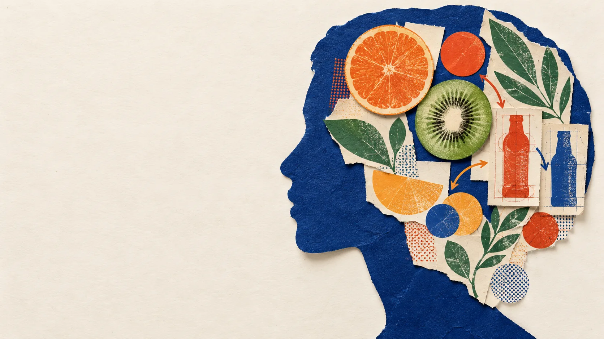
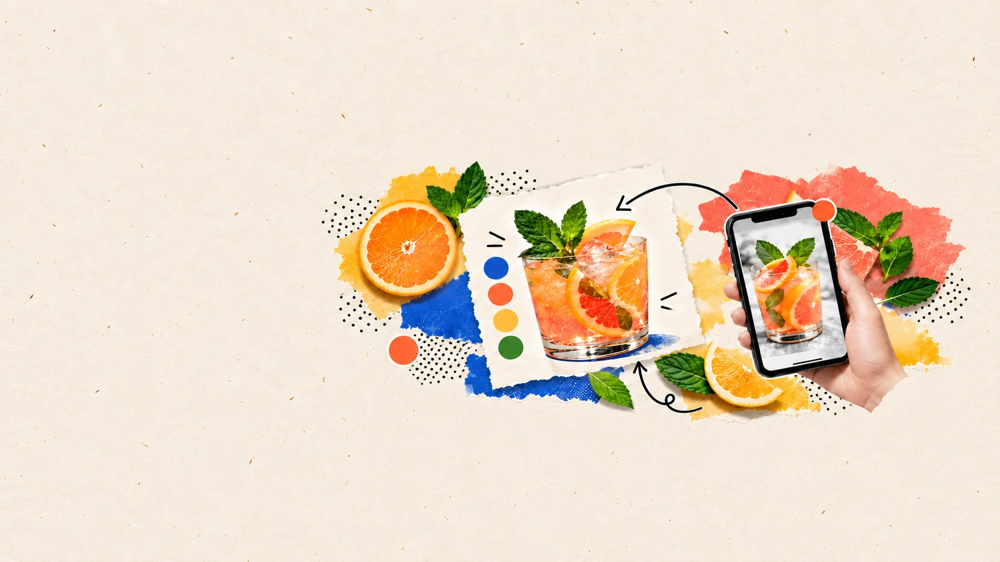
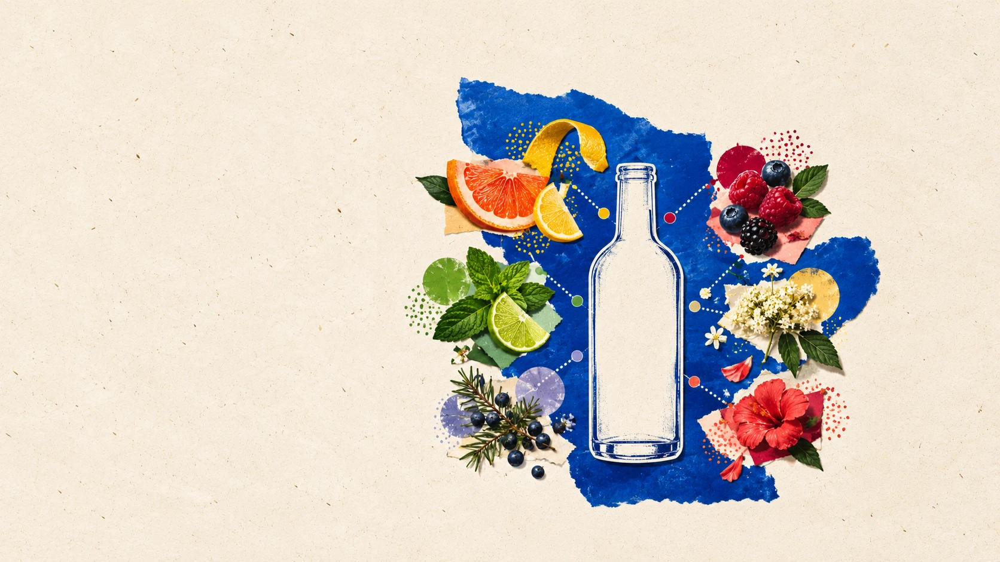
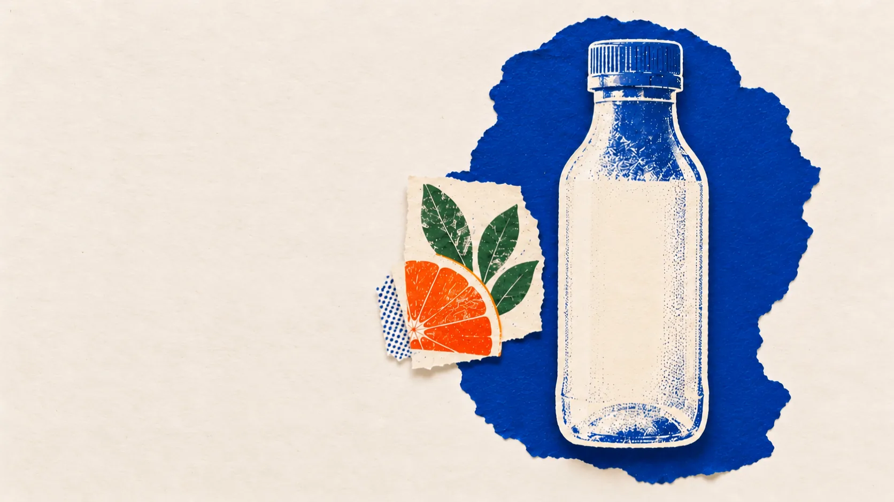
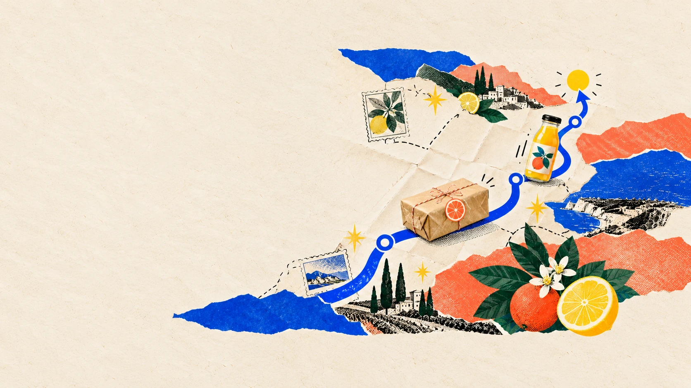
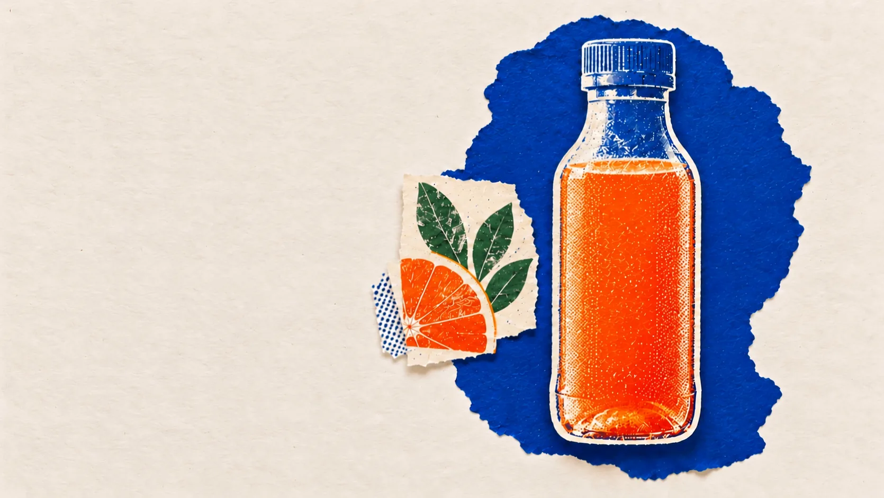
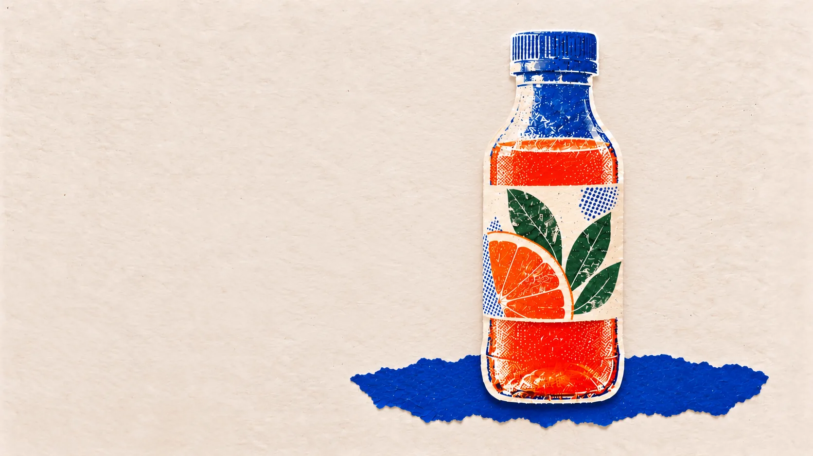

Start with a feeling.
Make it yours.
Begin with the feeling you want from your drink, then turn that instinct into something made for you.

Find your spark.
Make it yours.
A flavour, ritual, or wellbeing idea catches your eye. Bring the inspiration and we will help shape it around you.

Choose your blend.
Choose your balance.
Pick ingredients for the taste you love, the benefits you seek, and the way you want your drink to fit into everyday life.

Bring it
to life.
Your choices become a fresh, bespoke drink, prepared with care from the first pour to the final bottle.



Made around you.
On its way.
Your finished drink is prepared, sealed, and sent straight from the workshop to your door.

Meet your
moment.
A personalised drink, ready for the pause, ritual, or reset you had in mind.

Made for
your rhythm.
A drink that starts with your idea and fits the way you choose to live.